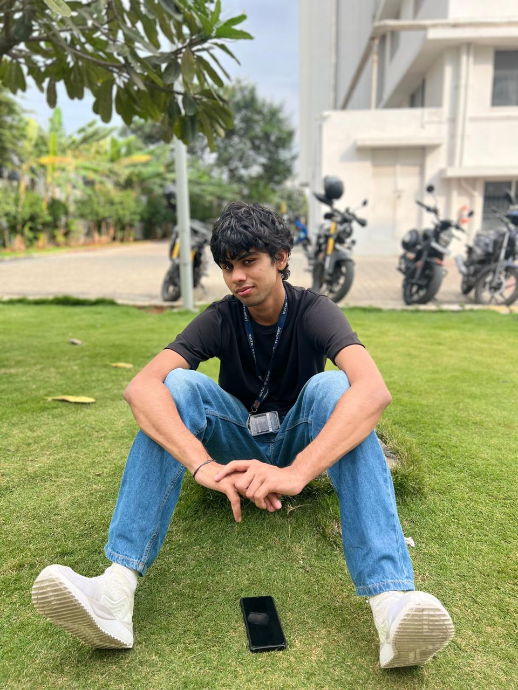

BIO-DATA / ABOUTThe person
The person
behind the work.

A CLOSER LOOKCurious by nature.
Curious by nature.
Builder by choice.
I am a Computer Science Engineering undergraduate at RVITM who enjoys software development, AI, data systems and practical product building.
01 / PERSONAL
The essentials.
- Full Name
- Abhishek Pasupathy
- Date of Birth
- 17 March 2006
- Location
- Bengaluru, Karnataka, India
- abhishekpasupathy2006@gmail.com
02 / ACADEMICS
The foundation.
- Degree
- B.E. Computer Science & Engineering
- Institute
- R.V. Institute of Technology and Management
- University
- Visvesvaraya Technological University
- CGPA
- 8.56 (1st Year)
What I bring
to a team.
01 — Problem solving02 — Systems thinking03 — Communication04 — Leadership05 — Adaptability06 — Continuous learning